Assess Olson’s institutions and collective-action argument
Useful first: Discriminate cooperation and coordination through best responses, Explain institutional persistence and political feedback without determinism
Lesson outline
- 02IntroductionSee the main question, learning objectives and prerequisites.
- 03Key definitions and conceptsGet familiar with the important terms and notation.
- 04Collective action, institutions and developmentSource: Source:
- 05Worked exampleFollow a complete application of the reasoning.
- 06Practise the reasoningWork through written tasks, with optional support and solutions.
- 07Check your reasoning: an offline quizCheck your choices and see feedback without a connection.
- 08Check your understandingReview the key distinctions and check what you can explain.
- 09Test yourself laterTry another prepared question before rereading.
- 10SourcesFind the materials and limits behind the lesson.
Introduction
In this lesson, assess Olson’s institutions and collective-action argument.
2.1 What you’ll learn
- Apply the resource-only migration comparison and an explicit incentive example, then assess Olson’s institutional argument and evidence limits.
2.2 Before you begin
- Discriminate cooperation and coordination through best responses
- Explain institutional persistence and political feedback without determinism
Check the foundations
Why need rational individuals not organize a shared beneficial reform, and does an institution’s useful function prove its origin?
Reveal foundation explanation
O005 identifies contribution/free-riding incentives; O006 distinguishes function from origin and adds beneficiary/coordination barriers.
Key definitions and concepts
- Marginal product of labor: The extra output from a marginal worker under the stated production assumptions.
- Marketable human capital: Skills/habits rewarded in private earnings.
- Civic institutional knowledge: Knowledge/organization affecting public institutions, with different collective incentives.
Collective action, institutions and development
Source: Source:
Olson’s additional reading explains why individually sensible choices need not produce efficient institutions. It connects the Week II free-riding problem to long-run income differences; its numerical comparisons are evidence from the article’s historical period.

4.1 Individual optimization does not guarantee social efficiency
Olson opens with the efficient-markets metaphor: if a profitable opportunity is visible and people can act on it, competition or bargaining should remove it; “big bills” should not remain on the sidewalk. He surveys arguments that rational workers contract to eliminate involuntary unemployment, firms enter profitable industries and limit monopoly losses, bargaining internalizes externalities where transaction costs are low, and political bargains eliminate inefficient policy.
Growth accounting often adds the assumption that economies operate on their production frontiers. Taken together, these claims imply little room for large gains from policy advice.
Olson’s article asks whether the rationality of individuals actually puts societies near their productive potential.
He proposes two broad explanations for cross-country income gaps. One is differing resource endowments—capital, land and natural resources, labor and human capital, or technology—with each society near its own production frontier.
The other is that policies and institutions produce very different incentive structures: individuals may work hard and act ingeniously while society still fails to secure large gains from cooperation. Olson’s evidence tests the factor-endowment account before arguing for the importance of institutions.
4.2 Knowledge and natural resources do not explain most of the gap
Olson treats much productive knowledge as globally accessible, especially basic science and unpatented knowledge. The Korean example reports that, from 1973 to 1979, royalties and other payments for disembodied technology were often below one-thousandth of GDP;
even adding foreign direct-investment profits, the total was under 1.5 percent of Korea’s GDP increase during the period. He acknowledges that imported machinery embodies knowledge and that not all Korean growth came from foreign knowledge.
The example supports his claim that unequal access to technology alone cannot explain large income gaps.
The North–South migration model formalizes the diminishing-returns-to-labor explanation. The horizontal axis allocates a fixed world labor force between a richer North and poorer South;
each region’s marginal product of labor (MPL), interpreted as the wage, falls as its workforce increases. At status quo point S, the North has relatively little labor per resource and thus a higher wage;
the South has more labor per resource and a lower wage. A worker moving South-to-North earns the North wage instead of the South wage, increasing world income by the wage difference (the figure’s segment ab).
If diminishing returns alone drove the gap, large migration should reallocate labour from S toward E along the fixed MPL schedules: the North’s workforce rises and its wage falls, while the South’s workforce falls and its wage rises. At E their wage/MPL levels are equal in this resource-only model.
The migration changes the allocation on the horizontal axis; it does not itself shift either MPL schedule.
Olson tests that prediction with historical cases. Ireland’s population fell from 5.4 million in 1821 to 3.5 million in 1986, while Great Britain’s rose from 14.2 million to 55.1 million;
Ireland’s population density shifted from above Britain’s to roughly one-fifth, yet its income remained around five-eighths of Britain’s and emigration continued. The article also notes European migration to the United States, East-to-West German migration, Latin American migration to the United States, and studies of the Mariel boatlift and repatriations to France and Portugal.
Olson argues these episodes do not show the wage equalization expected if land-to-labor ratios were the main cause. He acknowledges that migration has other effects and that Ireland’s nineteenth-century overpopulation is disputed in the cited literature.
Cross-country population density also fails as a simple poverty explanation. Olson contrasts sparsely populated Argentina, Brazil, Kenya, and Zaire with densely populated, higher-income West Germany, Belgium, Japan, Singapore, and Hong Kong. His descriptive log-log regression reports:
The relationship is positive, which Olson calls the “wrong” sign for a simple diminishing-returns story. He explicitly warns that this is a misspecified, descriptive regression: income affects population growth and migration as well as the reverse, and it cannot establish causation. He adds that modern manufacturing and services are less tied to local raw materials than earlier production.
4.3 Capital allocation is inconsistent with frontier production
If countries operated on similar neoclassical production frontiers, scarce capital should earn a higher marginal return in poor, capital-scarce countries, attracting investment until risk-adjusted returns converge. Olson invokes Lucas’s calculation: under comparable labor quality, capital’s marginal product in India should be 58 times the U.S. return;
even treating five Indian workers as equivalent to one U.S. worker leaves a large predicted gap. Yet capital remains heavily concentrated in rich economies, while investment and lending to poor countries are often limited and locally owned capital may flee.
Olson infers that policies and institutions can lower capital’s effective productivity or deter investment. The result contradicts the assumption that each country is near its aggregate production frontier.
His argument assumes small countries take the world price of capital as given and that, on the frontier, marginal product equals the world price. If domestic marginal product were higher than the cost of foreign capital, borrowing and investing locally would create gains.
The failure to observe capital flowing until such opportunities disappear is, in Olson’s metaphor, evidence of large uncollected bills. He also notes that capital and labor sometimes leave the same countries together, unlike the opposing flows expected in a frictionless two-factor frontier model.
4.4 Separate private skills from civic human capital
Olson divides “culture” into marketable and public-good human capital. Marketable human capital includes skills, work propensities, savings habits, and entrepreneurial traits that affect a person’s income in the market.
Public-good human capital, or civic culture, is knowledge about which policies and institutions would raise social income; it is not normally rewarded through an individual’s wage.
This distinction allows migration to serve as a natural experiment: migrants carry their origin-country skills and personal culture, while entering the host country’s institutional environment.
Newly arrived immigrants from poor countries reportedly earned about 55 percent as much as comparable native-born Americans, despite language and adjustment costs, though migrants from very poor countries originated in economies with per-capita incomes only a fraction of U.S. income. Olson argues that higher destination wages reveal higher marginal productivity in the host setting, not merely migrant selection: selection may affect who migrates, but does not explain why the same person’s productivity rises on moving.
He then compares Haitian and West German immigrants in the United States. In the 1980 Census, Haitian self-employed immigrants averaged annual earnings of USD 18,900 versus USD 27,300 for West Germans;
annual salaried earnings were USD 10,900 versus USD 21,900. Olson treats this as evidence of a marketable-human-capital difference, but his thought experiment concludes that even doubling Haiti’s income to reflect that difference would leave it far below West Germany’s level.
These comparisons rely on assumptions: immigrant earnings proxy marginal product; the comparison controls adequately for age, sex, and schooling;
migrants’ marketable traits are representative enough for the argument; and large institutional differences remain after accounting for selection.
Olson recognizes selection and investment differences as qualifications. He also cites divided Germany, Korea, and China as comparisons where populations with similar cultural traits experienced different outcomes under different institutional regimes.
Migration does not test civic culture, because migrant minorities generally do not change host-country institutions or policies.
4.5 Institutions, growth, and collective action
After considering knowledge, land, capital, and marketable human capital, Olson concludes that institutions and economic policies explain most international income differences. The article does not claim that this brief lecture identifies one ideal policy package.
It rejects the shortcut that the size of government or transfers alone determines institutional quality. Instead it emphasizes incentives, contract enforcement, secure long-run property rights, and the capacity to prevent public and private predation.
Olson argues that neither old growth theory nor endogenous growth theory predicts the full pattern he describes. Poor countries as a group do not necessarily grow faster than rich countries, yet a subset of lower-income countries can grow much faster by adopting better institutions and closing part of the gap between actual and potential income.
He gives historical examples of rapid catch-up, including South Korea in the 1970s, and compares the leading growers of the 1870s–1880s and 1970s–1980s. These decade-specific figures are the article’s historical evidence, not current rankings.
Olson also excludes open-frontier and oil-shock cases from the cited comparisons and says the argument should not be extended to those countries without qualification.
The “big bills” that matter most require coordinated specialization and trade across many workers and inputs. Individuals may optimize well in ordinary self-enforcing transactions, but complex production depends on impartial contract enforcement, secure property rights, stable incentives, and policies that do not invite predation.
These institutions do not arise automatically from individual rationality. Collective action can fail even when members could all gain from a socially efficient arrangement: private incentives to contribute, organize, or bear bargaining costs need not align with society-wide gains.
Olson’s concluding distinction is therefore between individual rationality and social rationality.

Figure 1 allocates fixed world labour across North and South. North labour increases rightward; South labour increases leftward. At S the vertical ab gap is the wage/MPL gain for a marginal mover; E is equalization under the resource-only model. The empirical discussion tests the model’s maintained explanation, not every possible migration effect.
Worked example
Prompt: In a hypothetical resource-only migration model a marginal worker’s North wage/MPL is 10 and South wage/MPL 4. Compute the immediate marginal output gain from moving, then explain the direction of wage changes as labour reallocates along fixed MPL schedules;
do not invent final wages without the schedules. A toy project yields revenue 100, requires cost 60, and loses fraction 0.5 of revenue to an explicitly assumed predatory rule: compare gross surplus and net private return.
Use Olson’s technology/land/capital evidence, marketable versus civic human capital, migration qualifications and collective-action logic to evaluate whether individual rationality guarantees frontier production or one universal policy package.
Solution: The marginal output gain is \(10-4=6\) under wage-equals-MPL assumptions. As South-to-North migration proceeds with fixed world labour, North labour rises and its MPL/wage falls while South labour falls and its MPL/wage rises;
the movement is along the schedules, not a shift, and equalization is only the resource-only model’s endpoint. The toy gross surplus is \(100-60=40\);
after the supplied revenue loss, private return is \(100(1-0.5)-60=-10.000000\). This illustrates incentives without estimating any country’s loss.
Olson argues accessible knowledge and natural-resource/density comparisons do not explain most gaps, with qualifications: his positive density regression has low \(R^2=.05\) and is explicitly misspecified/descriptive, not causal. Frontier models predict scarce-capital returns and inflows, yet capital can remain/flee rich/poor patterns inconsistent with that simple account;
the Lucas 58-times illustration is conditional on labour comparability. Marketable skills/habits affect private earnings;
civic knowledge concerns public-good institutions and is not normally privately rewarded. Migrants carry skills into a new setting, but selection, controls, earnings-as-MPL and representativeness assumptions limit inference;
migrant minorities do not automatically change host institutions, so the comparison does not test civic culture. Historical Irish/migration/capital/immigrant cases support his institutional interpretation, not zero relevance of all endowments.
Individuals can optimize while gains from impartial contracts/property/security/complex cooperation remain uncollected because organizing incentives and public/private predation differ. Catch-up applies to a subset, with oil/open-frontier exclusions;
government size alone is not institutional quality. No ideal universal package, current country ranking or automatic efficient-institution emergence follows.
Practise the reasoning
Write your reasoning before revealing an explanation. Begin with support, then apply the ideas to another situation.
6.1 Written exercise 1
In a hypothetical resource-only migration model a marginal worker’s North wage/MPL is 12 and South wage/MPL 5.
Solve the following:
- Compute the immediate marginal output gain from moving, then explain the direction of wage changes as labour reallocates along fixed MPL schedules;
- do not invent final wages without the schedules.
- A toy project yields revenue 120, requires cost 70, and loses fraction 0.5 of revenue to an explicitly assumed predatory rule: compare gross surplus and net private return.
- Use Olson’s technology/land/capital evidence, marketable versus civic human capital, migration qualifications and collective-action logic to evaluate whether individual rationality guarantees frontier production or one universal policy package.
Show a hint
Pause before calculating or choosing an explanation:
- What quantities, actors or outcomes are being compared? Write their roles, units and dates beside them.
- Which condition decides whether the relationship applies? Check the relevant definition before using a formula or classifying the case.
- What would have to remain fixed for your comparison to be meaningful? Work through one link in the reasoning at a time.
- How could you check the direction, boundary case or alternative explanation before stating your conclusion?
A local draft for your own study.
Reveal explanation
Solution: The marginal output gain is \(12-5=7\) under wage-equals-MPL assumptions. As South-to-North migration proceeds with fixed world labour, North labour rises and its MPL/wage falls while South labour falls and its MPL/wage rises;
the movement is along the schedules, not a shift, and equalization is only the resource-only model’s endpoint. The toy gross surplus is \(120-70=50\);
after the supplied revenue loss, private return is \(120(1-0.5)-70=-10.000000\). This illustrates incentives without estimating any country’s loss.
Olson argues accessible knowledge and natural-resource/density comparisons do not explain most gaps, with qualifications: his positive density regression has low \(R^2=.05\) and is explicitly misspecified/descriptive, not causal. Frontier models predict scarce-capital returns and inflows, yet capital can remain/flee rich/poor patterns inconsistent with that simple account;
the Lucas 58-times illustration is conditional on labour comparability. Marketable skills/habits affect private earnings;
civic knowledge concerns public-good institutions and is not normally privately rewarded. Migrants carry skills into a new setting, but selection, controls, earnings-as-MPL and representativeness assumptions limit inference;
migrant minorities do not automatically change host institutions, so the comparison does not test civic culture. Historical Irish/migration/capital/immigrant cases support his institutional interpretation, not zero relevance of all endowments.
Individuals can optimize while gains from impartial contracts/property/security/complex cooperation remain uncollected because organizing incentives and public/private predation differ. Catch-up applies to a subset, with oil/open-frontier exclusions;
government size alone is not institutional quality. No ideal universal package, current country ranking or automatic efficient-institution emergence follows.
6.2 Written exercise 2
In a hypothetical resource-only migration model a marginal worker’s North wage/MPL is 8 and South wage/MPL 3.
Solve the following:
- Compute the immediate marginal output gain from moving, then explain the direction of wage changes as labour reallocates along fixed MPL schedules;
- do not invent final wages without the schedules.
- A toy project yields revenue 80, requires cost 50, and loses fraction 0.5 of revenue to an explicitly assumed predatory rule: compare gross surplus and net private return.
- Use Olson’s technology/land/capital evidence, marketable versus civic human capital, migration qualifications and collective-action logic to evaluate whether individual rationality guarantees frontier production or one universal policy package.
A local draft for your own study.
Reveal explanation
Solution: The marginal output gain is \(8-3=5\) under wage-equals-MPL assumptions. As South-to-North migration proceeds with fixed world labour, North labour rises and its MPL/wage falls while South labour falls and its MPL/wage rises;
the movement is along the schedules, not a shift, and equalization is only the resource-only model’s endpoint. The toy gross surplus is \(80-50=30\);
after the supplied revenue loss, private return is \(80(1-0.5)-50=-10.000000\). This illustrates incentives without estimating any country’s loss.
Olson argues accessible knowledge and natural-resource/density comparisons do not explain most gaps, with qualifications: his positive density regression has low \(R^2=.05\) and is explicitly misspecified/descriptive, not causal. Frontier models predict scarce-capital returns and inflows, yet capital can remain/flee rich/poor patterns inconsistent with that simple account;
the Lucas 58-times illustration is conditional on labour comparability. Marketable skills/habits affect private earnings;
civic knowledge concerns public-good institutions and is not normally privately rewarded. Migrants carry skills into a new setting, but selection, controls, earnings-as-MPL and representativeness assumptions limit inference;
migrant minorities do not automatically change host institutions, so the comparison does not test civic culture. Historical Irish/migration/capital/immigrant cases support his institutional interpretation, not zero relevance of all endowments.
Individuals can optimize while gains from impartial contracts/property/security/complex cooperation remain uncollected because organizing incentives and public/private predation differ. Catch-up applies to a subset, with oil/open-frontier exclusions;
government size alone is not institutional quality. No ideal universal package, current country ranking or automatic efficient-institution emergence follows.
6.3 Written exercise 3
In a hypothetical resource-only migration model a marginal worker’s North wage/MPL is 15 and South wage/MPL 6.
Solve the following:
- Compute the immediate marginal output gain from moving, then explain the direction of wage changes as labour reallocates along fixed MPL schedules;
- do not invent final wages without the schedules.
- A toy project yields revenue 150, requires cost 90, and loses fraction 0.5 of revenue to an explicitly assumed predatory rule: compare gross surplus and net private return.
- Use Olson’s technology/land/capital evidence, marketable versus civic human capital, migration qualifications and collective-action logic to evaluate whether individual rationality guarantees frontier production or one universal policy package.
A local draft for your own study.
Reveal explanation
Solution: The marginal output gain is \(15-6=9\) under wage-equals-MPL assumptions. As South-to-North migration proceeds with fixed world labour, North labour rises and its MPL/wage falls while South labour falls and its MPL/wage rises;
the movement is along the schedules, not a shift, and equalization is only the resource-only model’s endpoint. The toy gross surplus is \(150-90=60\);
after the supplied revenue loss, private return is \(150(1-0.5)-90=-15.000000\). This illustrates incentives without estimating any country’s loss.
Olson argues accessible knowledge and natural-resource/density comparisons do not explain most gaps, with qualifications: his positive density regression has low \(R^2=.05\) and is explicitly misspecified/descriptive, not causal. Frontier models predict scarce-capital returns and inflows, yet capital can remain/flee rich/poor patterns inconsistent with that simple account;
the Lucas 58-times illustration is conditional on labour comparability. Marketable skills/habits affect private earnings;
civic knowledge concerns public-good institutions and is not normally privately rewarded. Migrants carry skills into a new setting, but selection, controls, earnings-as-MPL and representativeness assumptions limit inference;
migrant minorities do not automatically change host institutions, so the comparison does not test civic culture. Historical Irish/migration/capital/immigrant cases support his institutional interpretation, not zero relevance of all endowments.
Individuals can optimize while gains from impartial contracts/property/security/complex cooperation remain uncollected because organizing incentives and public/private predation differ. Catch-up applies to a subset, with oil/open-frontier exclusions;
government size alone is not institutional quality. No ideal universal package, current country ranking or automatic efficient-institution emergence follows.
6.4 Another chance to practise
Use the situation and assumptions below.
Solve the following:
- Does private skill portability in migration establish the effect of civic culture on host institutions?
A local draft for your own study.
Reveal explanation
No. Marketable traits move with individuals; migrant minorities generally do not change host rules, so that comparison does not test civic public-good institutions.
Check your reasoning: an offline quiz
Choose one answer per question. Check individual answers or check the whole quiz. Each option includes feedback on the reasoning, and everything works offline.
Reveal explanation
Use 10−4 under the wage-equals-MPL and comparable-worker assumptions.
Reveal explanation
Gross \(100-60=40\); private \(100(1-0.5)-60=-10\).
Reveal explanation
Distinguish privately rewarded skills from collective institutions, without inferring a universal policy package.
Check your understanding
- Apply the resource-only migration comparison and an explicit incentive example, then assess Olson’s institutional argument and evidence limits.
Test yourself later
Return to these questions after a break, before rereading the explanation. Use a question you have not just viewed.
9.1 Review question 1
In a hypothetical resource-only migration model a marginal worker’s North wage/MPL is 20 and South wage/MPL 8.
Solve the following:
- Compute the immediate marginal output gain from moving, then explain the direction of wage changes as labour reallocates along fixed MPL schedules;
- do not invent final wages without the schedules.
- A toy project yields revenue 200, requires cost 120, and loses fraction 0.5 of revenue to an explicitly assumed predatory rule: compare gross surplus and net private return.
- Use Olson’s technology/land/capital evidence, marketable versus civic human capital, migration qualifications and collective-action logic to evaluate whether individual rationality guarantees frontier production or one universal policy package.
A local draft for your own study.
Reveal explanation
Solution: The marginal output gain is \(20-8=12\) under wage-equals-MPL assumptions. As South-to-North migration proceeds with fixed world labour, North labour rises and its MPL/wage falls while South labour falls and its MPL/wage rises;
the movement is along the schedules, not a shift, and equalization is only the resource-only model’s endpoint. The toy gross surplus is \(200-120=80\);
after the supplied revenue loss, private return is \(200(1-0.5)-120=-20.000000\). This illustrates incentives without estimating any country’s loss.
Olson argues accessible knowledge and natural-resource/density comparisons do not explain most gaps, with qualifications: his positive density regression has low \(R^2=.05\) and is explicitly misspecified/descriptive, not causal. Frontier models predict scarce-capital returns and inflows, yet capital can remain/flee rich/poor patterns inconsistent with that simple account;
the Lucas 58-times illustration is conditional on labour comparability. Marketable skills/habits affect private earnings;
civic knowledge concerns public-good institutions and is not normally privately rewarded. Migrants carry skills into a new setting, but selection, controls, earnings-as-MPL and representativeness assumptions limit inference;
migrant minorities do not automatically change host institutions, so the comparison does not test civic culture. Historical Irish/migration/capital/immigrant cases support his institutional interpretation, not zero relevance of all endowments.
Individuals can optimize while gains from impartial contracts/property/security/complex cooperation remain uncollected because organizing incentives and public/private predation differ. Catch-up applies to a subset, with oil/open-frontier exclusions;
government size alone is not institutional quality. No ideal universal package, current country ranking or automatic efficient-institution emergence follows.
9.2 Review question 2
In a hypothetical resource-only migration model a marginal worker’s North wage/MPL is 9 and South wage/MPL 4.
Solve the following:
- Compute the immediate marginal output gain from moving, then explain the direction of wage changes as labour reallocates along fixed MPL schedules;
- do not invent final wages without the schedules.
- A toy project yields revenue 90, requires cost 55, and loses fraction 0.5 of revenue to an explicitly assumed predatory rule: compare gross surplus and net private return.
- Use Olson’s technology/land/capital evidence, marketable versus civic human capital, migration qualifications and collective-action logic to evaluate whether individual rationality guarantees frontier production or one universal policy package.
A local draft for your own study.
Reveal explanation
Solution: The marginal output gain is \(9-4=5\) under wage-equals-MPL assumptions. As South-to-North migration proceeds with fixed world labour, North labour rises and its MPL/wage falls while South labour falls and its MPL/wage rises;
the movement is along the schedules, not a shift, and equalization is only the resource-only model’s endpoint. The toy gross surplus is \(90-55=35\);
after the supplied revenue loss, private return is \(90(1-0.5)-55=-10.000000\). This illustrates incentives without estimating any country’s loss.
Olson argues accessible knowledge and natural-resource/density comparisons do not explain most gaps, with qualifications: his positive density regression has low \(R^2=.05\) and is explicitly misspecified/descriptive, not causal. Frontier models predict scarce-capital returns and inflows, yet capital can remain/flee rich/poor patterns inconsistent with that simple account;
the Lucas 58-times illustration is conditional on labour comparability. Marketable skills/habits affect private earnings;
civic knowledge concerns public-good institutions and is not normally privately rewarded. Migrants carry skills into a new setting, but selection, controls, earnings-as-MPL and representativeness assumptions limit inference;
migrant minorities do not automatically change host institutions, so the comparison does not test civic culture. Historical Irish/migration/capital/immigrant cases support his institutional interpretation, not zero relevance of all endowments.
Individuals can optimize while gains from impartial contracts/property/security/complex cooperation remain uncollected because organizing incentives and public/private predation differ. Catch-up applies to a subset, with oil/open-frontier exclusions;
government size alone is not institutional quality. No ideal universal package, current country ranking or automatic efficient-institution emergence follows.
Sources
Show materials and lesson scope
- ADDITIONAL - Olson - Big Bills Left on the Sidewalk. Why Some Nations are Rich, and Others Poor
- Week II - lecture - large slides
- Individual optimization does not guarantee social efficiency
- Knowledge and natural resources do not explain most of the gap
- Capital allocation is inconsistent with frontier production
- Separate private skills from civic human capital
- Institutions, growth, and collective action
- Olson, journal pp. 3–5.
- Olson, journal pp. 5–7.
- Olson, journal pp. 7–8.
- Olson, journal pp. 9–10, Fig. 1.
- Olson, journal pp. 10–11.
- Olson, journal pp. 12–13.
- Olson, journal pp. 13–15.
- Olson, journal pp. 14–15.
- Olson, journal pp. 15–16.
- Olson, journal pp. 16–18.
- Olson, journal pp. 17–19.
- Olson, journal pp. 19–22.
- Olson, journal pp. 20–21.
- Olson, journal pp. 21–23.
- Olson (1996), physical PDF pp. 8
Numerical and contextual illustrations are hypothetical unless explicitly described as a reported result. Historical data, model assumptions and unresolved source differences retain their stated limits.
These exercises are for self-study. Viewing a prepared item or solution may make that item unsuitable as a fresh check in a tutor chat. This page does not record an assessed learning result.